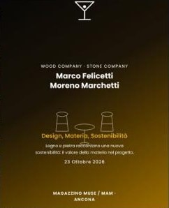
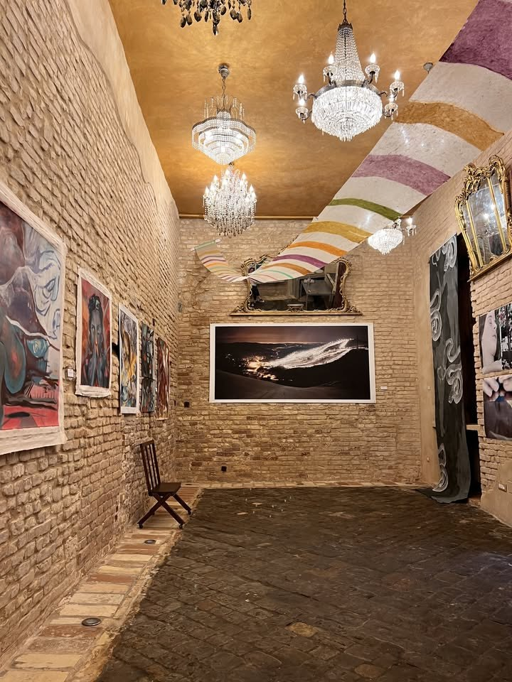
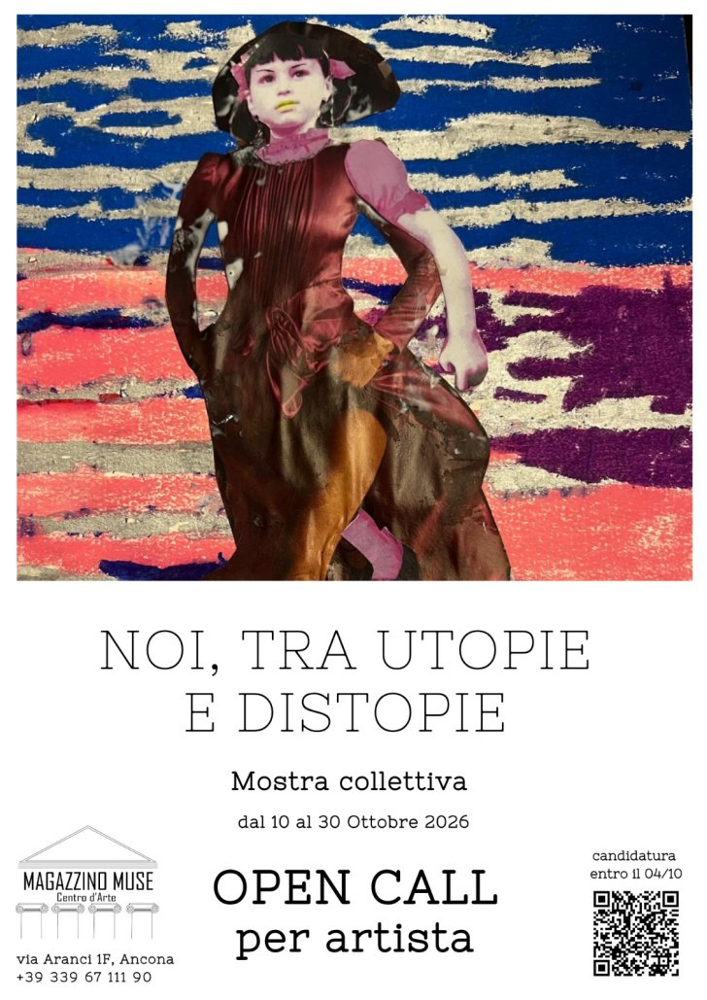
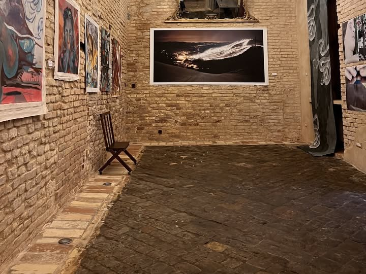
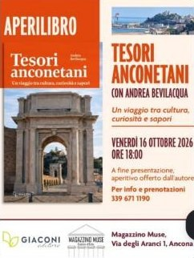
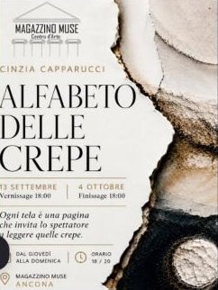

Questo è un magazzino.
Ci teniamo l'arte, le idee e le serate da ricordare.
Magazzino Muse è un centro d'arte contemporanea in via degli Aranci, ad Ancona. Opere da collezionare, mostre, incontri e una sala da prenotare per eventi privati, con allestimento, catering e fotografia su misura.
Cosa puoi fare a Magazzino Muse
- Mostre Cosa c'è ora e cosa arriva Mostre, inaugurazioni, incontri e presentazioni, in galleria e nei luoghi storici della città. Vedi il programma ↗
- Collezione Opere su richiesta Ogni opera ha una scheda, un codice e una persona che risponde. Il prezzo arriva in privato. Chiedi una visita privata ↗
- La sala Eventi privati e aziendali Cene, presentazioni, lanci. Si sceglie il pacchetto, al resto pensa MAM. Richiedi la sala ↗
- Esperienze Su misura Visite in luoghi storici, laboratori di collage e pittura, percorsi come la mostra dei profumi. Costruisci la tua ↗
- Progetti Per aziende, enti e artisti Curatela di mostre, promozione di artisti, progetti in città e testi sull'arte. Lavora con noi ↗
- Proponi Un'idea mai vista ad Ancona Una mostra, un format, un'installazione. MAM accoglie proposte nuove e le aiuta a nascere. Invia una proposta ↗

Ora in mostra · ultimi giorni
Noi, tra utopie e distopie
Nata da una open call aperta anche ad artisti fuori dalla rete della galleria: pittura, collage, scultura e tecniche miste di artisti marchigiani, emiliani e inglesi, intorno a una domanda sul presente e su dove può andare.

La sala
Le vostre serate, sotto i lampadari.
Cene private, eventi aziendali, presentazioni e feste. Si sceglie il pacchetto, al resto pensa MAM.
- Proiettore, audio e video
- Catering e aperitivi
- Allestimento
- Fotografia
- Accoglienza
- Stampa
In programma
Prossimi appuntamenti
- Laboratorio Collage, ritagliare il presente EsempioDi gruppo · materiali inclusi · posti limitati Prenota
- Aperidesign Incontro 05 EsempioDesign e progetto raccontati da chi li fa, con aperitivo Dettagli
- Aperilibro Presentazione con l'autore EsempioOre 18 · aperitivo offerto dopo la presentazione Dettagli
Dal magazzino
Le ultime cose successe qui
Aperidesign 04

Tesori anconetani

Alfabeto delle crepe
Proponi
Hai un'idea che ad Ancona non si è mai vista?
Mostre, format, installazioni, serate. MAM accoglie proposte nuove e le aiuta a nascere.
Amici di MAM